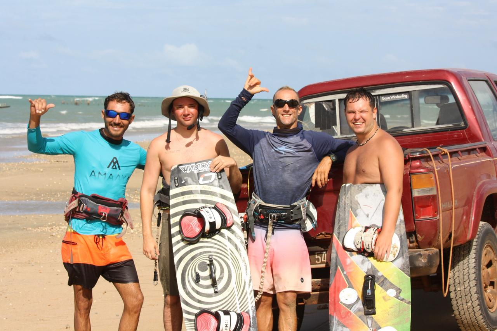
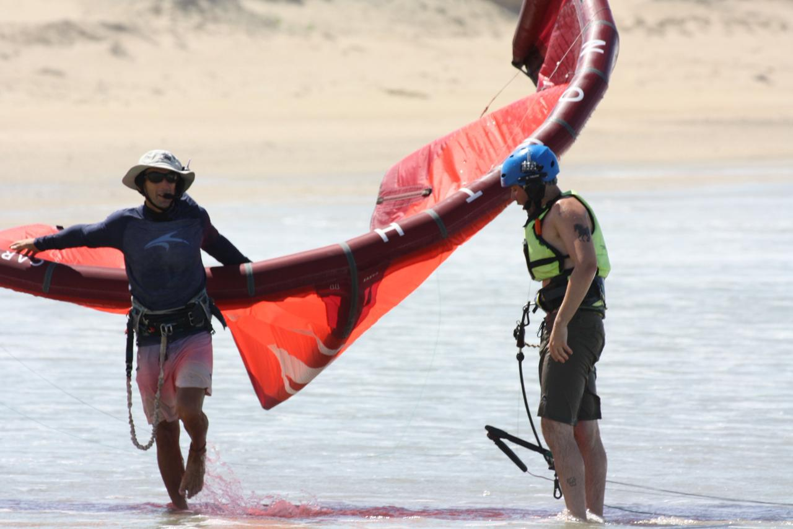
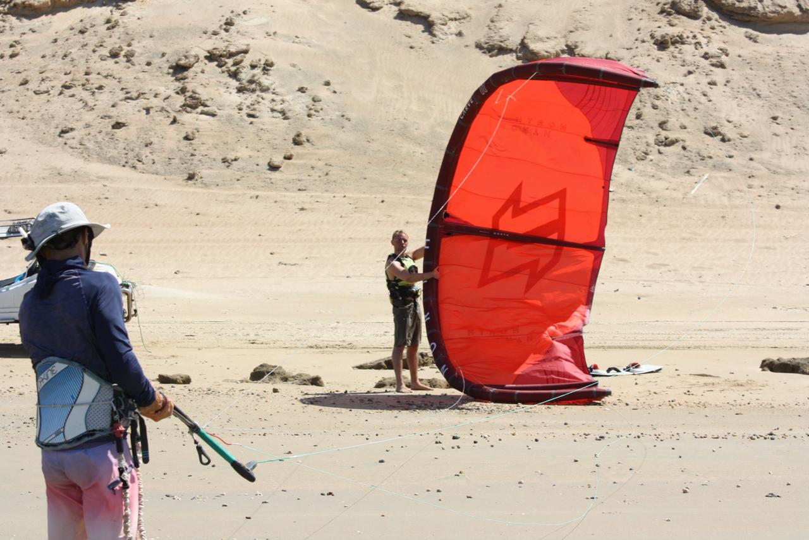
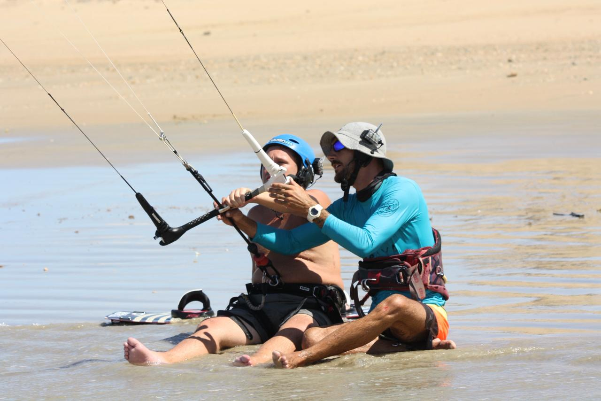
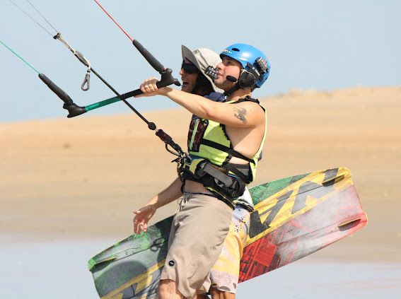

Downwinds in Icaraizinho — The Best Routes in the Northeast
Icaraizinho de Amontada, in Ceará, is one of the best downwind spots in the world. The northeast wind blows in the perfect direction — side-on shore — guaranteeing safe and ideal conditions for learning and progressing. The warm water (27°C), long beaches and shallow lagoon make learning faster and more enjoyable for all levels.
We're the only school in Icaraizinho with our own 4×4 and buggy fleet to take you to the starting point of each route — and back to your accommodation.
What's included in every downwind
Our 3 Downwind Routes
We choose the best wind and tide conditions for each outing. Round-trip transport from your accommodation is always included.
Caetanos → Icaraizinho
We travel by 4×4 or buggy along the beach to Caetanos, a beautiful fishing village 16 km south of Icaraizinho. We rig the equipment and start the drift. With a water guide leading the way and land support, we ride close to the beach downwind until reaching Icaraí. This is the famous Icaraí Wave Route for wing foil.

Icaraizinho → Lagoa dos Patos
We set off from Icaraizinho Bay, riding downwind, passing small islands and entering the river channel that leads to the lagoon. Once there, you can enjoy the calm, perfect waters of the lagoon. At the end, we board a boat back to Icaraí.
Icaraizinho → Praia da Ponta
Ideal for your first downwind experience. We set off from Icaraí Bay and head to Praia da Ponta, a route of about 7 km. We ride a bit more on arrival and return by buggy. Water guide and land support available.
Lesson Gallery





